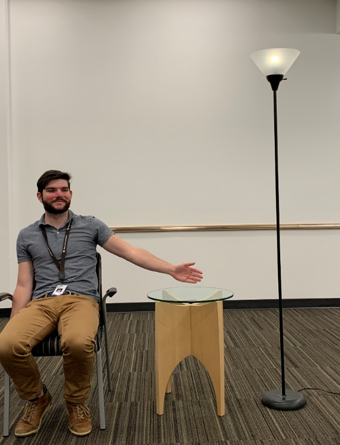
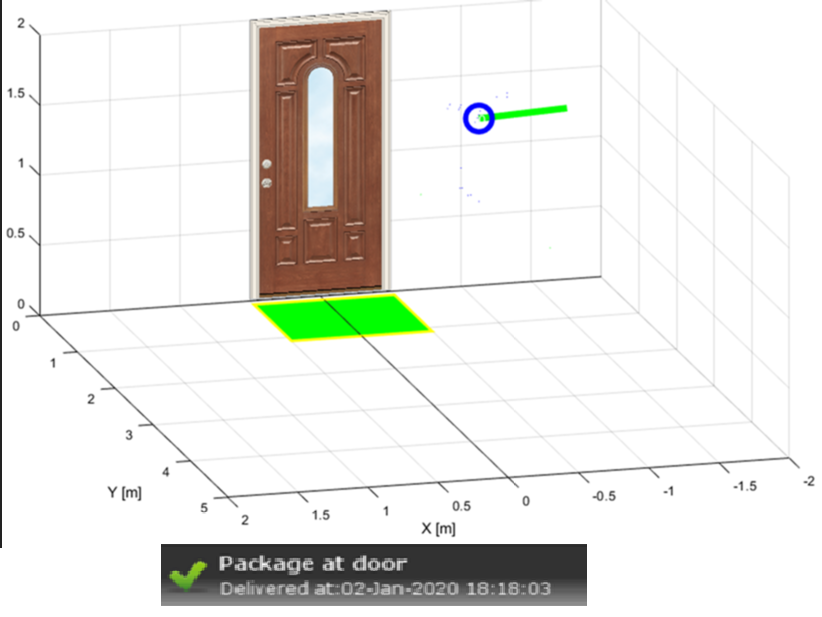
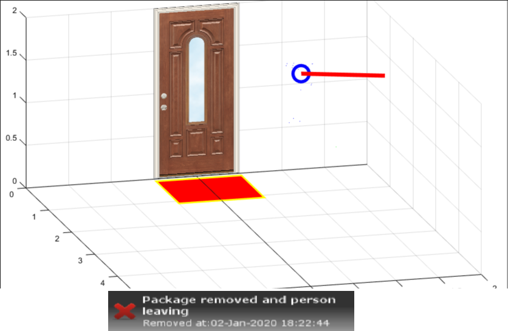

mmWave at CES 2020
===========
Featured Demonstrations at CES 2020 utilizing mmWave for Smart Home Automation.
____________________________
| <strong> Featured Demo </strong> | What's Under the Hood
|-----|-----------|
|<strong> Smart Light Control: </strong> mmWave auto triggers lights based on location of person. Control Brightness of light with your hand. <br />  | <strong>IWR6843: </strong> mmWave sensor running the <a href="javascript:void(0)" onclick="window.parent.jumpToTirexNodeInCurrentPackage('AINQDBLWEvn7AE47v97xNg')"> 3D People Counting Demo. </a> See link to people counting. Track of person with adjacent point cloud triggers the control.
| <strong> Door Way Package Detection:</strong> Get Notified for status of Package delivered at your door step. Find out if someone picked your package with mmWave’s static object detection and tracking. <br />   | <a href="javascript:void(0)" onclick="window.parent.jumpToTirexNodeInCurrentPackage('AIpcYR0KCNPXZRF8U9IYYw')"> Automated Doors & Gates Demo </a >on <strong> IWR6843 </strong> capable of tracking moving objects and distinguishing static objects in scene. Data from the Uart port is used to make simple decisions about the scene.